Calmi
Diseño y prototipo de una app de acompañamiento emocional: un chatbot con quien conversar, ejercicios para manejar la ansiedad, lecturas y un registro de cómo se siente la persona. Proyecto individual, hecho desde cero.
- Rol
- UX/UI Designer, con foco en UI y prototyping
- Tipo
- Proyecto académico
- Curso
- Prototipado · Coderhouse
- Año
- 2025
- Herramientas
- Figma, Illustrator, IA de imágenes
- Plataforma
- Aplicación móvil
01
Contexto
La consigna. El curso pedía diseñar desde cero un producto digital que resolviera un problema concreto y documentar cómo evolucionaba el prototipo, de low fidelity a high fidelity, con usability testing y un Design System propio. Elegí hacer una app de acompañamiento emocional.
El problema. La falta de soporte emocional es una realidad para muchas personas. Sin espacios seguros para expresar lo que sienten, y con poco tiempo y recursos, aumentan la ansiedad y la depresión. A veces la terapia no es accesible por tiempo, distancia o costos.
El objetivo. Crear una aplicación que permita identificar, gestionar y reducir el estrés, con apoyo emocional en los momentos de necesidad.
La solución. Calmi ofrece cuestionarios para identificar emociones, ejercicios de respiración y mindfulness, un chatbot para conversar y juegos que ayudan a reducir el estrés. No reemplaza la terapia profesional: es un recurso accesible para acompañar en los momentos difíciles.
02
Investigación
Exploración visual. Antes de comenzar el diseño, exploré cuatro aplicaciones relacionadas con el bienestar emocional. Recorrí sus principales funcionalidades para observar sus interfaces, estructuras de navegación y recursos visuales. Esta exploración me permitió identificar patrones, diferencias y referencias para definir el enfoque visual y funcional de Calmi.
A partir de ahí construí la user persona.
User persona
Davina
- Edad
- 31 años
- Vive
- En pareja, en Caballito, CABA
- Trabaja
- Maestra jardinera
- Estudia
- Bellas Artes
Davina vive en Caballito con su pareja. Trabaja como maestra jardinera y estudia Bellas Artes. Su rutina intensa le genera estrés, afectando su bienestar emocional. No dispone de tiempo ni acceso fácil a terapia, por lo que busca alternativas prácticas para gestionar sus emociones y mantener el equilibrio en su vida.
01 Necesidades y objetivos
- Encontrar una solución accesible y rápida para manejar el estrés.
- Optimizar su tiempo con herramientas efectivas para su bienestar emocional.
- Mantenerse activa en su trabajo y también en sus estudios sin sentirse desbordada.
02 Frustraciones
- Falta de creatividad y desmotivación debido al estrés.
- Sensación de estancamiento en su vida personal y profesional.
- Tiene cobertura psicológica en su obra social, pero los tiempos de espera son demasiado largos para ayudarla en el momento.
03 Motivaciones
- Encontrar equilibrio entre sus responsabilidades y su bienestar.
- Contar con un apoyo emocional inmediato y accesible.
04 Relación con la tecnología
- Utiliza principalmente su celular sin problema alguno.
Storyboard
El storyboard cuenta, en tres momentos, cómo Davina pasa de estar bloqueada en su taller a encontrar en Calmi un momento de calma.
-
01 · Situación inicial
«esta vez está bloqueada»
Davina está en su taller, rodeada de materiales para su escultura. Aunque las ideas suelen fluir, esta vez está bloqueada. Decide tomarse un descanso. Busca con su celular una app para manejar sus emociones.
-
02 · Interacción
«Encuentra Calmi»
Encuentra Calmi, una app para identificar y manejar el estrés. Comienza con un cuestionario para saber cómo se siente.
-
03 · Resultado
«logra hacer una pausa»
La app le sugiere un ejercicio de respiración. Davina lo sigue y logra hacer una pausa en medio de su rutina. Se siente más tranquila y retoma su actividad con mayor claridad.
03
Definición
Separé las funciones imprescindibles del MVP (registro de emociones, chatbot, actividades y diario emocional) de las que quedaron para próximas versiones, como la comunidad, el registro del sueño o una mascota virtual. Después ordené el contenido en una arquitectura de información y definí los user flows del chatbot.
MVP
Queremos que Calmi sea una herramienta práctica y fácil de usar.
Imprescindible
Registro de emociones
Cuestionarios acompañados de emojis para reconocer cómo se siente el usuario.
Chatbot
Conversar y recibir apoyo inmediato. Puede retomar conversaciones anteriores.
Actividades
- Juegos interactivos
- Ejercicios para controlar los estados de ánimo
- Lectura sobre salud mental y su cuidado
Diario emocional
Permite registrar pensamientos y emociones.
Próximas versiones
- Creación de personajes o mascotas virtuales
- Personalización de la interfaz
- Sistema de recompensas
- Comunidad e historias de otras personas
- Sueño y registro del descanso
- Historial de los avances que logró el usuario en el tiempo
Arquitectura de información
Las secciones marcadas como Próximas versiones no forman parte del MVP, pero podrían integrarse si la aplicación sigue creciendo.
Home
Notificaciones
- Recordatorios de ejercicios y actividades
- Notificaciones de logros y metas alcanzadas, progreso
- Recordatorio de bienestar emocional (ej.: recordatorio de respirar si el usuario está estresado)
- Recordatorio de descanso: alertas para que el usuario tome descansos regulares o apague el dispositivo antes de dormir
Chatbot
- Asistente conversacional con IA para conversar y recibir apoyo inmediato
- Puede retomar conversaciones anteriores
- No reemplaza la atención profesional
Gamificación
Próximas versiones- Sistema de recompensas por uso continuo
- Logros y metas alcanzadas
- Retroalimentación positiva
Mi diario
- Visualización de avances emocionales
- Análisis de patrones emocionales
- Comparación de emociones actuales con el historial
Configuración
Personalizar
Próximas versiones- Cambiar tema y/o diseño de la app
- Configurar/modificar personaje o mascota virtual (reconocer y seleccionar cómo se siente rápidamente)
Perfil
- Información personal
- Historial de emociones
- Mi progreso
Sueño
Próximas versiones- Meditación
- Sonidos relajantes
- Música para dormir
- Rutinas armadas para dormir mejor
Actividades
Juegos
- Reconocer emociones
- Relajación
- Distracción
Ejercicios
- Reducir ansiedad/estrés
- Respiración y relajación
- Cuestionarios (preguntas simples para evaluar su estado emocional)
- Autoconocimiento
- Descanso: técnicas de relajación como meditaciones cortas o respiraciones profundas para inducir un mejor sueño
Lectura
- Artículo sobre cómo gestionar emociones
- Reflexiones sobre la importancia del autocuidado
- Consejos y recursos para momentos de crisis
- Consejos prácticos sobre bienestar emocional
- Consejos para mejorar el sueño
Comunidad
Próximas versiones- Grupos para compartir experiencias
- Testimonios inspiradores de otros usuarios
- Espacio de apoyo emocional en momentos difíciles (comunidad para recibir consejos y apoyo)
El registro de emociones del MVP se hace desde «¿Cómo te sentís hoy?» en el Home; Mi diario muestra cómo evolucionan esas emociones en el tiempo.
Task flow
Usuario busca chatbot, interactúa y cierra conversación.
- Usuario abre la aplicación
- Pantalla de Home
- Selecciona ícono «chatbot»
- Usuario ve una introducción por primera vez
- Pantalla de la interfaz del chat
- Usuario revisa el historial e inicia una conversación nueva
- Usuario escribe un mensaje y recibe una respuesta
- Pantalla de conversación con el chatbot
- Usuario cierra el chat y vuelve al inicio
User flow
El user flow completo incluye el acceso, el registro, la recuperación de la contraseña y el onboarding. Este es el tramo del chatbot.
Ver user flows y arquitectura de información en FigJam(se abre en una pestaña nueva)
04
Wireframes
Cada pantalla pasó por tres etapas: sketch a mano (low fidelity), wireframe mid fidelity y diseño high fidelity.
Inicio de sesión
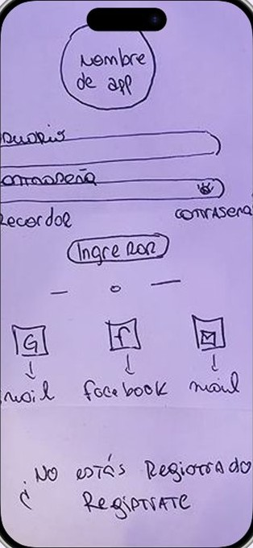
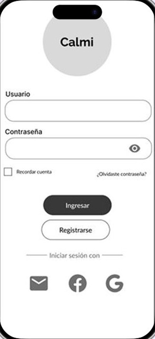
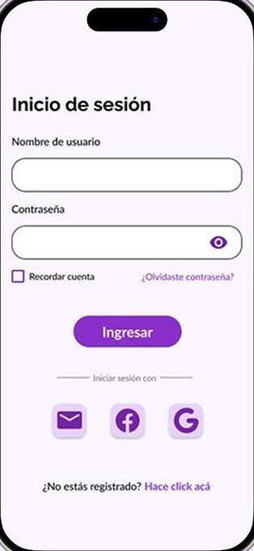
Registro
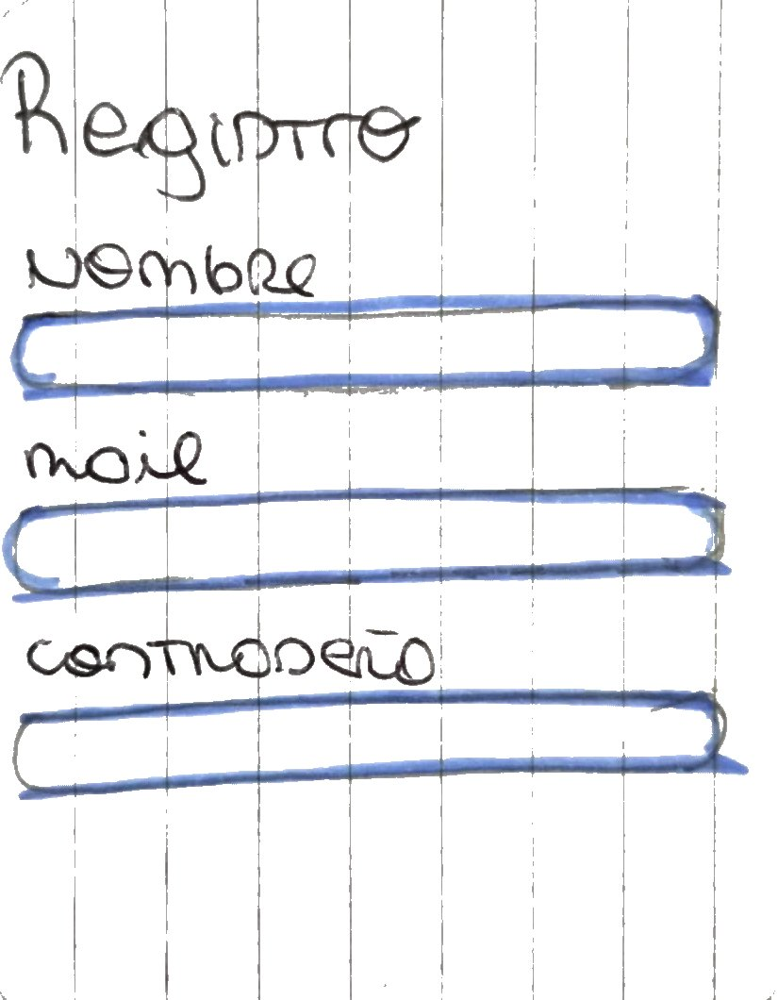
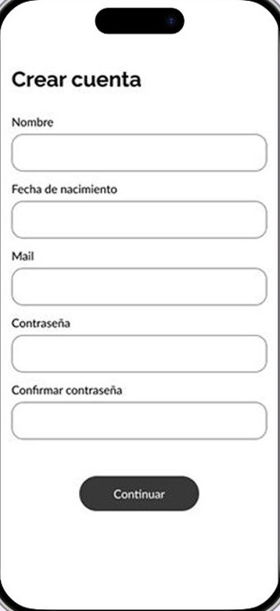
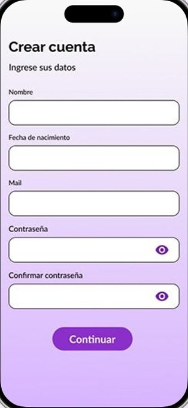
Home
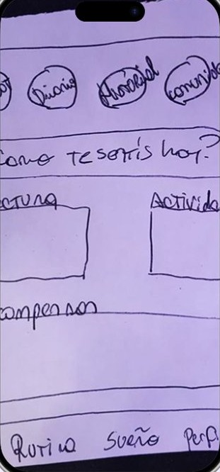
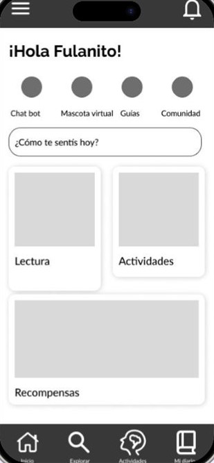
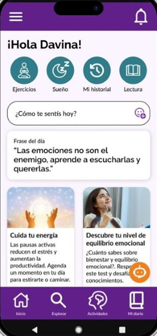
Inicio del chatbot
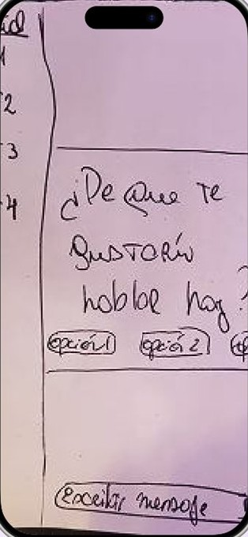
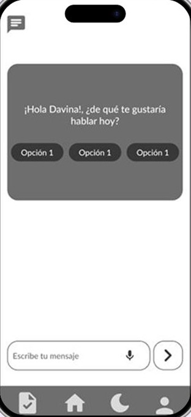
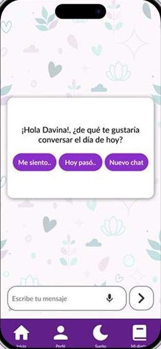
Conversación del chatbot
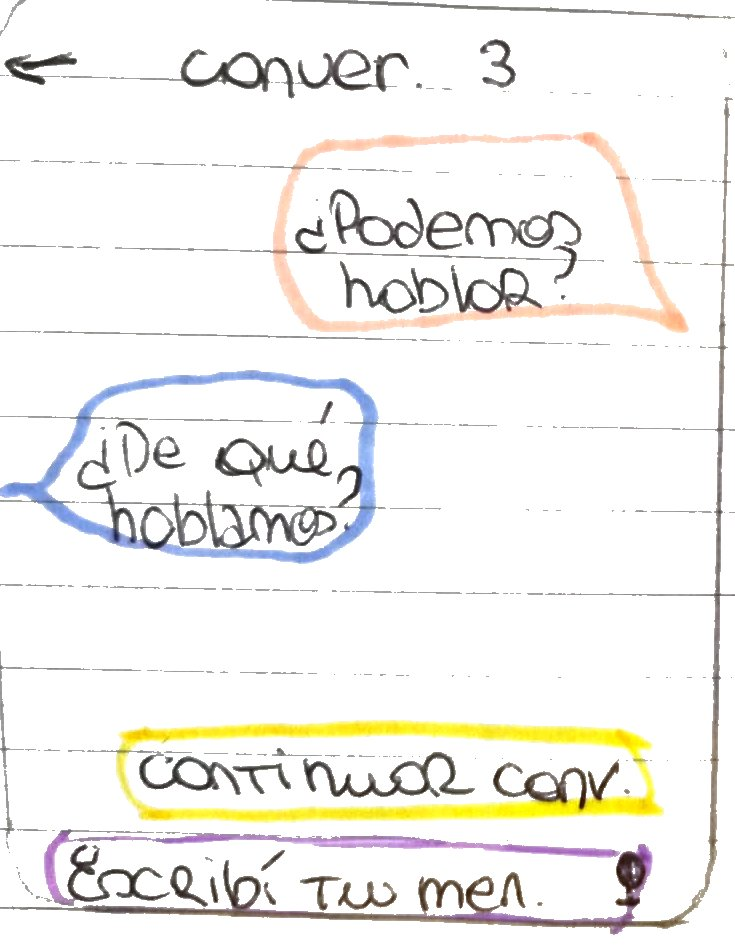
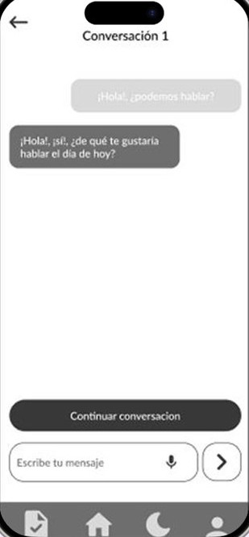
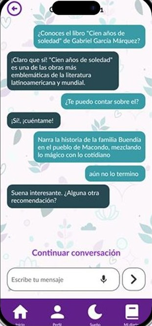
05
Design System
El moodboard reúne imágenes que reflejan los valores de la marca: cuidado, ayuda y resiliencia. De ahí salió la paleta: el violeta (primario) y el turquesa (secundario) transmiten tranquilidad y equilibrio, y el naranja (acento) aporta energía.
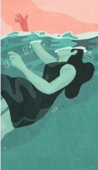
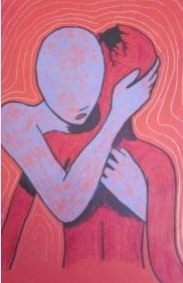
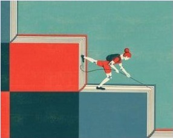
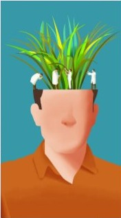
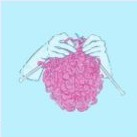
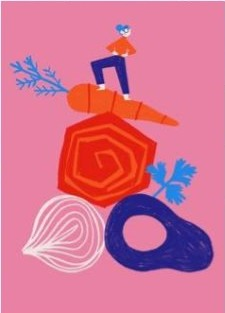
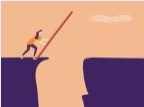
ColorPaleta
- Primario#8A2FCA
- Primario oscuro#611F89
- Secundario#389BA6
- Secundario oscuro#307C8A
- Acento#EF7F1D
- Fondo#FAF5FE
TipografíaRaleway · Lato · px
H1Raleway · 60 · Bold
H2Raleway · 45 · Semibold
H3Raleway · 40 · Medium
TítuloRaleway · 27 · Bold
Textos y botonesLato · 20 a 12
06
Diseño de interfaz
Onboarding
Siete preguntas sobre el descanso, el ánimo y las expectativas, con una barra de progreso.
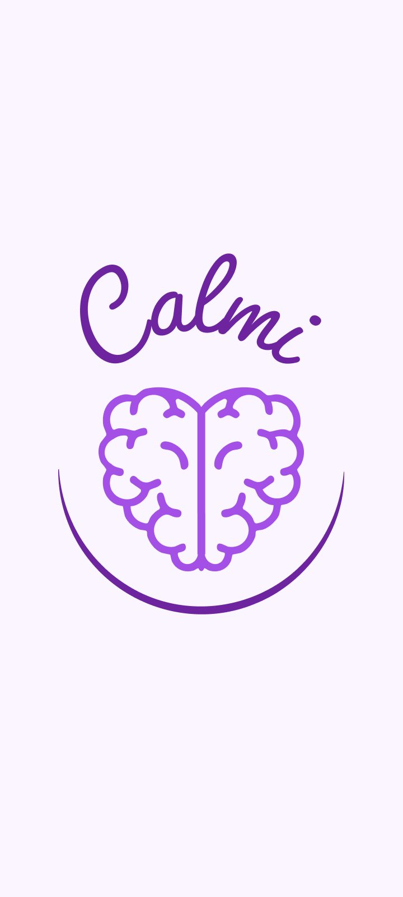
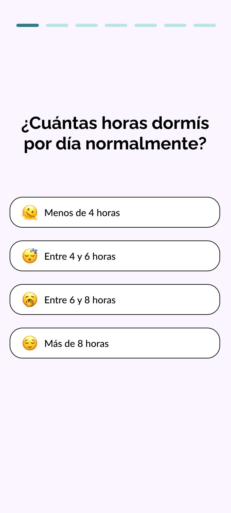
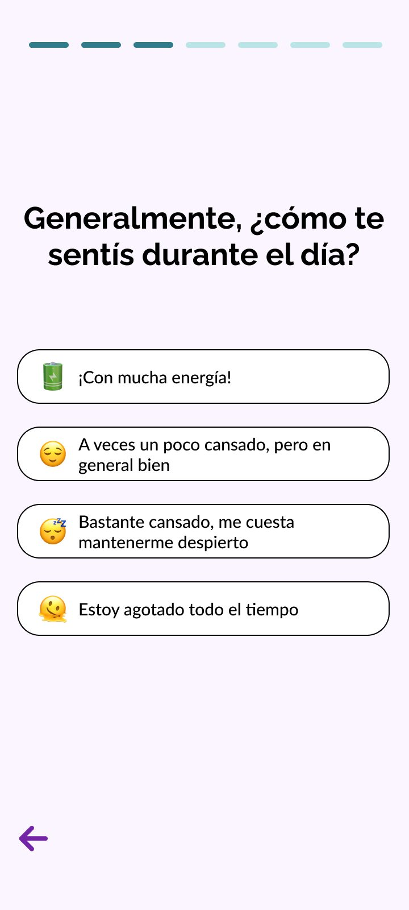


Home y navegación
Todo a uno o dos toques
- 1Menú hamburguesa con el resto de las funciones: perfil, configuración y comunidad.
- 2Barra inferior con accesos a las secciones principales.
- 3Botón flotante para que el chatbot esté siempre a mano.

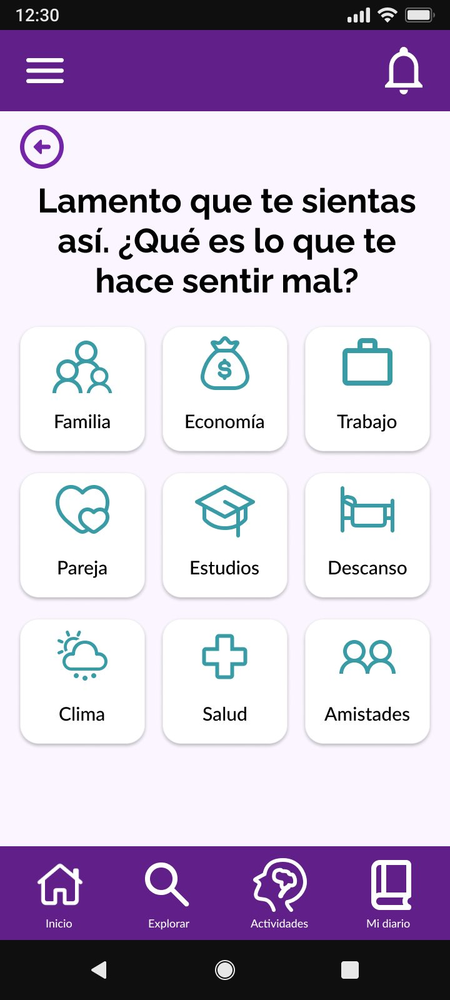
Registro de emociones
Cómo te sentís, en dos pasos
Primero se elige la emoción con un emoji; después, qué la provoca: familia, economía, trabajo, estudios y otros temas.
Chatbot
De la presentación a la conversación
La primera vez, Calmi se presenta. Después se puede empezar una conversación nueva con respuestas rápidas o retomar una del historial.

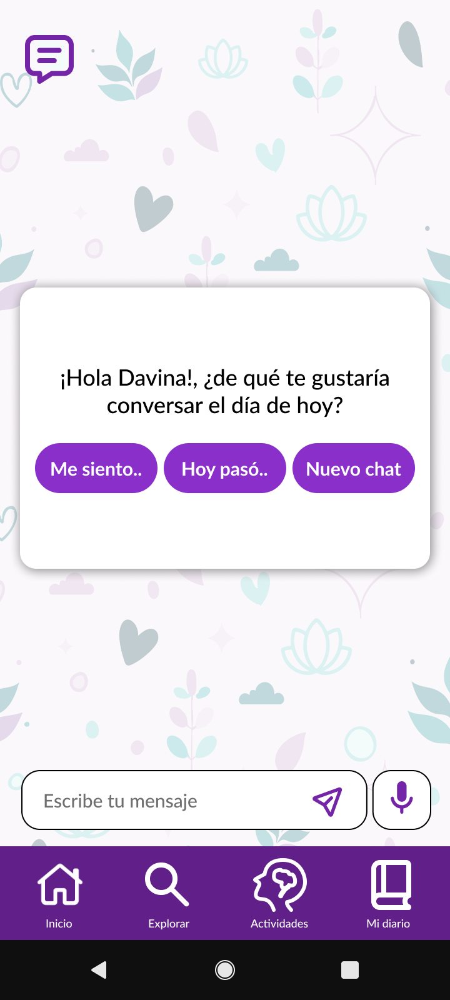


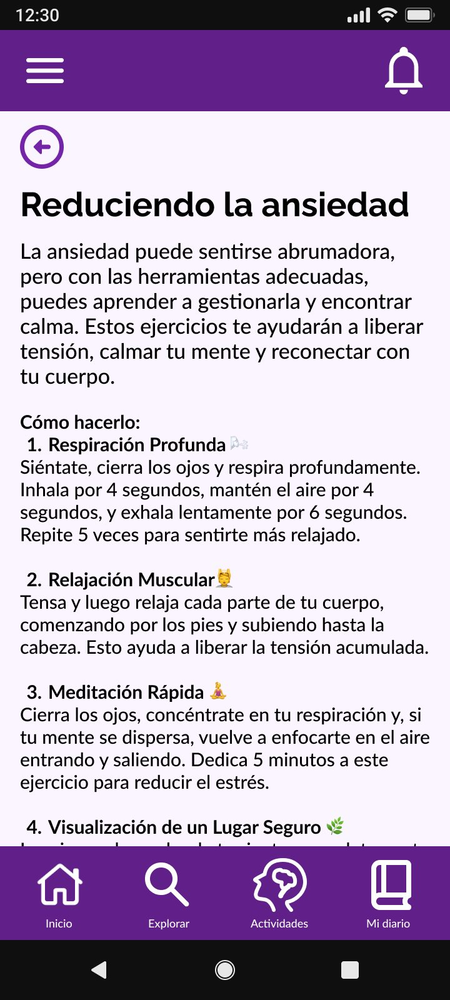
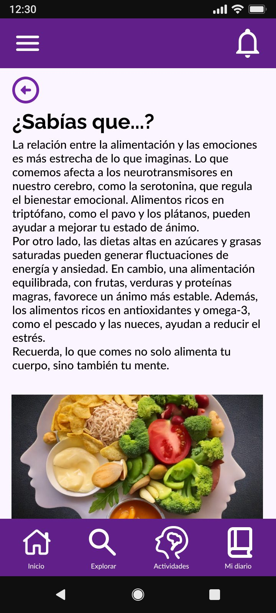
Actividades
Ejercicios, juegos y lecturas
Las actividades se ordenan en tres carruseles. Cada una abre su propia pantalla, como el ejercicio para reducir la ansiedad o la lectura sobre alimentación y emociones.
07
Usability testing
- Usuarios
- 9
- Tareas
- 5
- Al final
- Encuesta
Iniciar sesión, registrarse, registrar una emoción, conversar con el chatbot y elegir una actividad. Al terminar, cada persona respondió qué tan fácil le resultó cada tarea.
El test se hizo en Maze, sin moderación. Lo empezaron 9 personas, pero algunas abandonaron en el camino: la cantidad de respuestas baja de 9 en la primera tarea a 6 en las dos últimas. Por eso cada porcentaje se calcula sobre quienes hicieron esa tarea.
Lo que funcionó
Registrar una emoción
- 100 %
- completó la tarea
- 0 %
- abandonó
Lo que se mejoró
Inicio de sesión y registro: A/B test
Los dos flows tenían muchos clics fuera de lugar y un error con la opción de ver la contraseña. Rediseñé la pantalla y comparé las dos versiones con 6 usuarios.
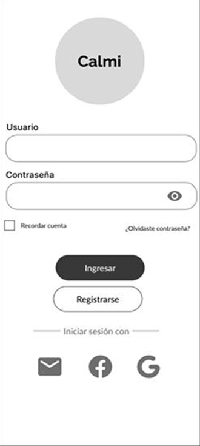
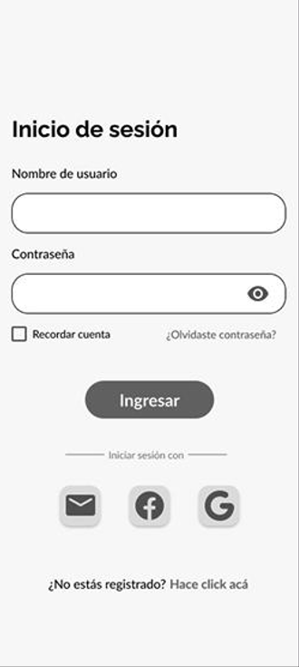
| Métrica | A | B |
|---|---|---|
| Duración promedio | 114 s | 64 s |
| Tasa de éxito | 88,9 % | 94,5 % |
| Abandono | 11,1 % | 0 % |
| Clics fuera de lugar | 83,1 % | 58 % |
| Métrica | A | B |
|---|---|---|
| Duración promedio | 44,4 s | 35 s |
| Tasa de éxito | 75 % | 85 % |
| Abandono | 25 % | 0 % |
| Clics fuera de lugar | 69,1 % | 53,4 % |
Métricas de Maze. La tasa de éxito y el abandono se calculan sobre las personas que hicieron la tarea; los clics fuera de lugar, sobre el total de clics.
Cómo quedó en high fidelity
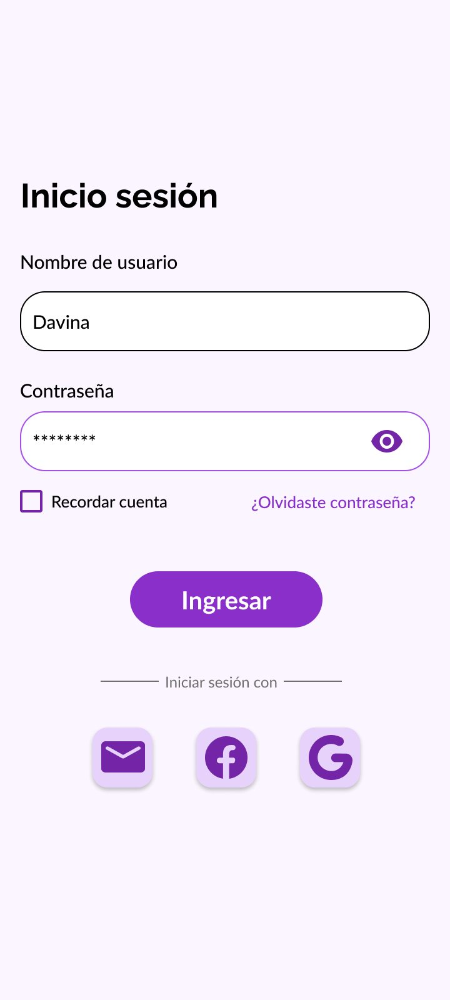
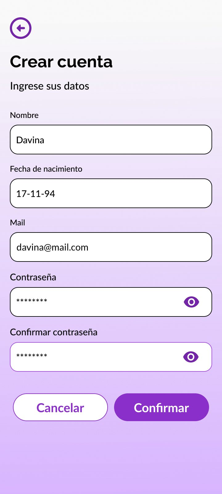
Lo que quedó pendiente
Iniciar una conversación con el chatbot
- 50 %
- la consideró intuitiva
- 33 %
- no supo qué hacer o dónde hacer clic
- 16,7 %
- abandonó
Próximo paso. Simplificar el flow de conversación y sumar señales visuales más claras sobre cómo empezar a conversar.
08
Prototipo
Las pantallas se conectaron en un prototipo navegable en Figma.
09
Aprendizajes
Desarrollar Calmi fue una instancia importante en mi proceso de aprendizaje. Me permitió incorporar herramientas de prototipado, trabajar en la organización de interfaces y comprender mejor cómo se conectan las distintas etapas de diseño.
Con el tiempo, al revisar el proyecto desde una mirada más crítica, pude reconocer decisiones que hoy resolvería de otra manera. Esto me permitió tomar mayor conciencia de la importancia de la jerarquía visual, la consistencia y la atención al detalle.
Más allá del resultado, Calmi representa una etapa de mi formación en la que adquirí conocimientos y desarrollé criterios que pude aplicar y seguir perfeccionando en proyectos posteriores.